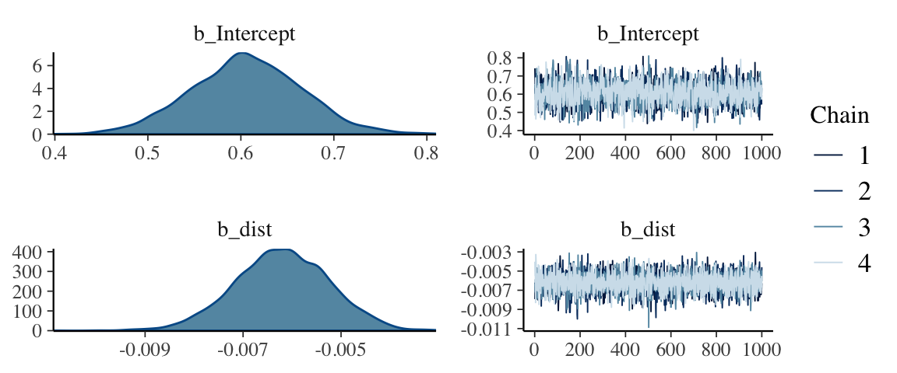
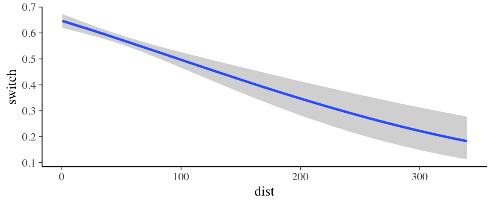
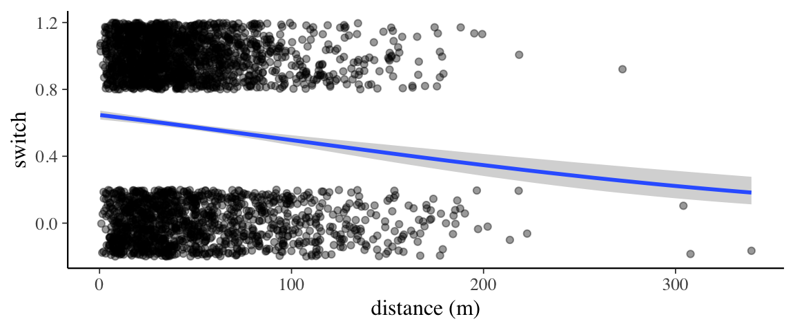
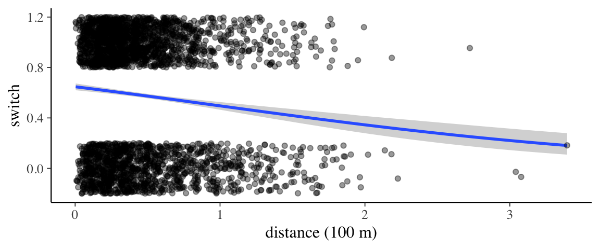
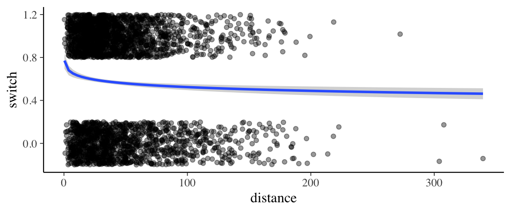
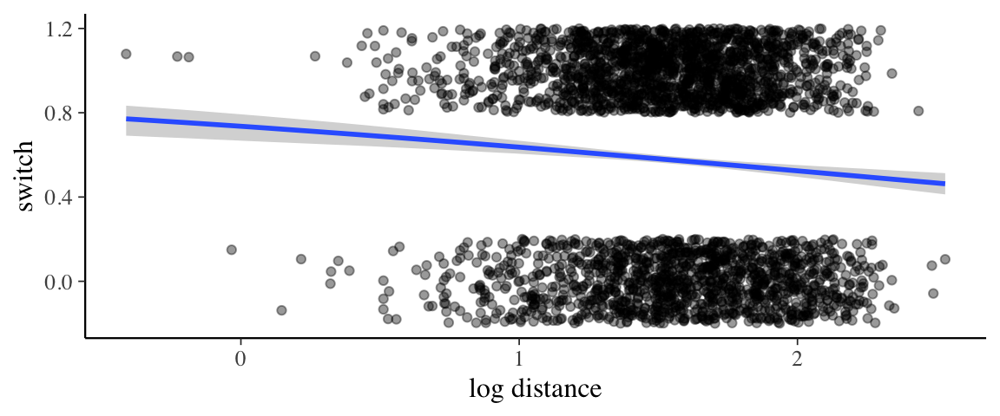
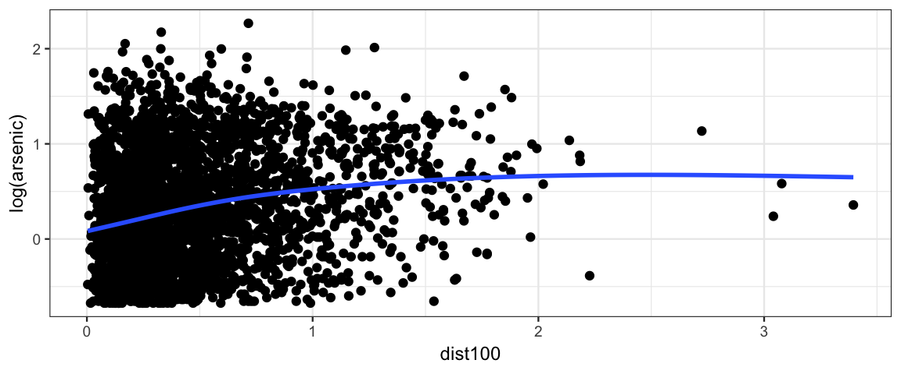
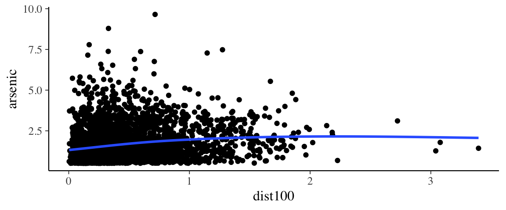
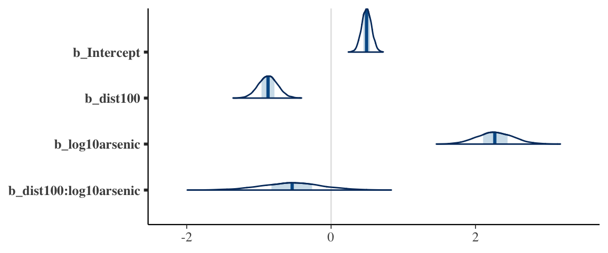
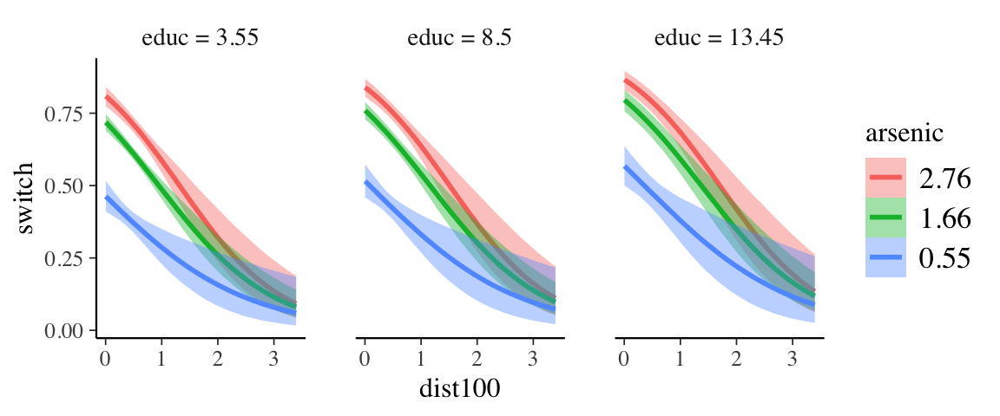

25 This and That
25.1 Wells in Bangledesh
Some things to learn from this example:
- We can use
update()to speed up fitting multiple models. - We can combine ideas to build up models with multiple predictors.
marginal_effects()can simplify making certain plots that show how the model thingks the response depends on one of the predictors. It is a little bit clunky to use, but it saves a lot of work.- Transforming predictors adds to our palette of models.
- Evaluating the model prediction at specific values can help us understand what the model says.
- For logistic regression, there is a handy short-cut to help understand the coefficients.
25.1.1 The data
The rstanarm package contains a data set called wells that includes data from
a survey of 3200 residents in a small area of Bangladesh suffering from arsenic
contamination of groundwater. Respondents with elevated arsenic levels in their
wells had been encouraged to switch their water source to a safe public or
private well in the nearby area and the survey was conducted several years later
to learn which of the affected residents had switched wells.
The data include several variables.
switchIndicator for well-switching (1 = switched, 0 = did not switch)arsenicArsenic level in respondent’s welldistDistance (meters) from the respondent’s house to the nearest well with safe drinking water.associationIndicator for member(s) of household participating in community organizationseducYears of education (of the head of household)
library(rstanarm)
glimpse(wells)## Observations: 3,020
## Variables: 5
## $ switch <int> 1, 1, 0, 1, 1, 1, 1, 1, 1, 1, 1, 1, 1, 1, 1, 1, 1, 1, 1, 1, 1, 1, 1, 1, 1, 1, 1, …
## $ arsenic <dbl> 2.36, 0.71, 2.07, 1.15, 1.10, 3.90, 2.97, 3.24, 3.28, 2.52, 3.13, 3.04, 2.91, 3.2…
## $ dist <dbl> 16.83, 47.32, 20.97, 21.49, 40.87, 69.52, 80.71, 55.15, 52.65, 75.07, 29.77, 34.5…
## $ assoc <int> 0, 0, 0, 0, 1, 1, 1, 0, 1, 1, 1, 0, 1, 1, 1, 1, 0, 1, 1, 0, 1, 0, 1, 0, 0, 1, 0, …
## $ educ <int> 0, 0, 10, 12, 14, 9, 4, 10, 0, 0, 5, 0, 0, 0, 0, 7, 7, 7, 0, 10, 7, 0, 5, 0, 8, 8…25.1.2 The Question
Our goal is to use this data to determine which factors impact the decision to switch.
25.1.3 Distance as a predictor
It seems reasonable that people might be more likely to switch to a well if it isn’t too far away. Let’s see.
wells1_brm <-
brm(switch ~ dist, data = wells, family = bernoulli(link = logit))## Compiling the C++ model## Start samplingwells1_brm## Family: bernoulli
## Links: mu = logit
## Formula: switch ~ dist
## Data: wells (Number of observations: 3020)
## Samples: 4 chains, each with iter = 2000; warmup = 1000; thin = 1;
## total post-warmup samples = 4000
##
## Population-Level Effects:
## Estimate Est.Error l-95% CI u-95% CI Eff.Sample Rhat
## Intercept 0.61 0.06 0.49 0.72 1822 1.00
## dist -0.01 0.00 -0.01 -0.00 4241 1.00
##
## Samples were drawn using sampling(NUTS). For each parameter, Eff.Sample
## is a crude measure of effective sample size, and Rhat is the potential
## scale reduction factor on split chains (at convergence, Rhat = 1).What do we make of dist as a predictor? Ideally, we’d like some more digits.
hdi(posterior(wells1_brm), regex_pars = "b_")| par | lo | hi | mode | prob |
|---|---|---|---|---|
| b_Intercept | 0.4863 | 0.7208 | 0.6207 | 0.95 |
| b_dist | -0.0081 | -0.0043 | -0.0065 | 0.95 |
mcmc_combo(as.mcmc(wells1_brm), regex_pars = "b_")
b_dist is “small”, but well separated from 0. But keep in mind that our
unit of distance is meters, so this is telling us about the change in log
odds of switching per meter that the clean well is farther away. One meter
probably doesn’t matter much. Perhaps 100 or 1000 meters would matter more,
however. This model predicts a change in log odds of roughly 0.6 for every
100 meters. Don’t ignore small coefficients if they get multiplied by
large variables!
So what does our model “look like”. It would be nice to see how the probability
of switching depends on distance from a clean well. The marginal_effects()
function can help us make such a plot.
marginal_effects(wells1_brm)
If we would like to add to the plot we have some work to do.
marginal_effects()doesn’t return the plot, it prints it, so we have to tell it not to do that.- The result will be a list of plots (because in a more complicated model there would be multiple predictors), so to get the plot we want, we have to select it from the list.
p <- marginal_effects(wells1_brm) %>% plot(plot = FALSE)
p[[1]] %>%
gf_jitter(switch ~ dist, data = wells,
height = 0.2, width = 0, alpha = 0.4,
inherit = FALSE) %>%
gf_labs(x = "distance (m)")
25.1.4 Updating a model without recompiling
Seems a shame to recompile our Stan model just to use the new distance variable.
Fortunately, brms includes and update() function for updating models and it will
avoid recompiling when it can. For example, there is no need to recompile if
- we use a different data set (that still has the needed variables for the model)
- we want change the number of iterations or chains.
Let’s give it a try.
wells <- wells %>% mutate(dist100 = dist / 100)
wells2_brm <- update(wells1_brm, switch ~ dist100, newdata = wells)## Start samplingwells2_brm## Family: bernoulli
## Links: mu = logit
## Formula: switch ~ dist100
## Data: wells (Number of observations: 3020)
## Samples: 4 chains, each with iter = 2000; warmup = 1000; thin = 1;
## total post-warmup samples = 4000
##
## Population-Level Effects:
## Estimate Est.Error l-95% CI u-95% CI Eff.Sample Rhat
## Intercept 0.61 0.06 0.49 0.72 3926 1.00
## dist100 -0.62 0.10 -0.81 -0.44 3780 1.00
##
## Samples were drawn using sampling(NUTS). For each parameter, Eff.Sample
## is a crude measure of effective sample size, and Rhat is the potential
## scale reduction factor on split chains (at convergence, Rhat = 1).p <- marginal_effects(wells2_brm) %>% plot(plot = FALSE)
p[[1]] %>%
gf_jitter(switch ~ dist100, data = wells,
height = 0.2, width = 0, alpha = 0.4,
inherit = FALSE) %>%
gf_labs(x = "distance (100 m)")
# Two ways use a log transformation on distance
wells <- wells %>% mutate(log10dist = log10(dist))
wells3_brm <- update(wells1_brm, newdata = wells, formula. = switch ~ log10(dist))## Start samplingwells4_brm <- update(wells1_brm, newdata = wells, formula. = switch ~ log10dist)## Start samplingwells3_brm## Family: bernoulli
## Links: mu = logit
## Formula: switch ~ log10(dist)
## Data: wells (Number of observations: 3020)
## Samples: 4 chains, each with iter = 2000; warmup = 1000; thin = 1;
## total post-warmup samples = 4000
##
## Population-Level Effects:
## Estimate Est.Error l-95% CI u-95% CI Eff.Sample Rhat
## Intercept 1.02 0.16 0.72 1.34 3428 1.00
## log10dist -0.46 0.10 -0.66 -0.27 3450 1.00
##
## Samples were drawn using sampling(NUTS). For each parameter, Eff.Sample
## is a crude measure of effective sample size, and Rhat is the potential
## scale reduction factor on split chains (at convergence, Rhat = 1).p <- marginal_effects(wells3_brm) %>% plot(plot = FALSE)
p[[1]] %>%
gf_jitter(switch ~ dist, data = wells, height = 0.2, width = 0, alpha = 0.4,
inherit = FALSE) %>%
gf_labs(x = "distance")
wells4_brm## Family: bernoulli
## Links: mu = logit
## Formula: switch ~ log10dist
## Data: wells (Number of observations: 3020)
## Samples: 4 chains, each with iter = 2000; warmup = 1000; thin = 1;
## total post-warmup samples = 4000
##
## Population-Level Effects:
## Estimate Est.Error l-95% CI u-95% CI Eff.Sample Rhat
## Intercept 1.02 0.17 0.70 1.34 3390 1.00
## log10dist -0.46 0.10 -0.66 -0.26 3458 1.00
##
## Samples were drawn using sampling(NUTS). For each parameter, Eff.Sample
## is a crude measure of effective sample size, and Rhat is the potential
## scale reduction factor on split chains (at convergence, Rhat = 1).p <- marginal_effects(wells4_brm) %>% plot(plot = FALSE)
p[[1]] %>%
gf_jitter(switch ~ log10(dist), data = wells,
height = 0.2, width = 0, alpha = 0.4,
inherit = FALSE) %>%
gf_labs(x = "log distance")
compare(loo(wells1_brm), loo(wells2_brm), loo(wells3_brm), loo(wells4_brm))| elpd_diff | se_diff | elpd_loo | se_elpd_loo | p_loo | se_p_loo | looic | se_looic | |
|---|---|---|---|---|---|---|---|---|
| loo(wells1_brm) | 0.0000 | 0.0000 | -2040 | 10.424 | 1.935 | 0.0469 | 4080 | 20.85 |
| loo(wells2_brm) | -0.0915 | 0.0097 | -2040 | 10.417 | 2.026 | 0.0472 | 4080 | 20.83 |
| loo(wells3_brm) | -10.5534 | 3.2084 | -2051 | 9.448 | 1.998 | 0.0394 | 4101 | 18.90 |
| loo(wells4_brm) | -10.6293 | 3.2097 | -2051 | 9.462 | 2.076 | 0.0424 | 4101 | 18.92 |
25.1.5 Interpreting coefficients – discrete change
25.1.6 Interpreting coefficients – the divide by 4 trick
Rather than consider a discrete change in our predictor \(x\), we can compute the derivative of the logistic curve at the central value. Differentiating the function \(\mathrm{ilogit}(\alpha + \beta x)\) with respect to \(x\) yields \[ \begin{align*} \frac{d}{dx} \mathrm{ilogit}(\alpha + \beta x) &= \beta e^{\alpha + \beta x}/ (1 + e^{\alpha + \beta x})^2 \end{align*} \]
Now consider the \(x\) value for which model predicts a probability of 50%. That is \[ \begin{align*} 0.5 &= \mathrm{ilogit}(\alpha + \beta x) \\ \mathrm{logit}(0.5) &= \alpha + \beta x \\ 0 &= \alpha + \beta x \\ x &= \frac{-\alpha}{\beta} \\ \end{align*} \]
Plugging this into the derivative we get.
\[ \begin{align*} \beta e^{\alpha + \beta x} / (1 + e^{\alpha + \beta x})^2 &= \beta e^{\alpha + \beta \frac{-\alpha}{\beta}} / (1 + e^{\alpha + \frac{-\alpha}{\beta}})^2 \\ &= \beta e^{0} / (1 + e^{0})^2 \\ &= \beta / 4 \end{align*} \]
This is the steepest slope on the logistic curve. So \(\beta/4\) gives us an upper bound on how much the probability changes as \(x\) changes. This upper bound is a good approximation for values near this central point.
Applying this to our example,
- The central value of \(x\) is approximately (plugging the posterior means for the paramters) \(- \frac{0.61}{- 0.62} = 0.98 \approx 1\).
- So an increase of 100 meters decreases the probabity of switching by about 15%.
Let’s see how this compares to the direct calculation of the change. Again, using the posterior mean parameter values we get.
- difference in probability of switching at 100m: \(\mathrm{ilogit}(\hat \alpha + \hat \beta \cdot 1) = - \frac{0.61}{- 0.62} =\) 0.98.
- probability of switching at 200m: $(+ 2) = $ -0.63.
That’s pretty close to our \(\beta/4\) estimate.
25.1.7 Other predictors: arsenic
If a person’s well is heavily contaminated with arsenic, perhaps they are more likely to switch.
wells5_brm <-
update(wells1_brm, newdata = wells, switch ~ dist100 + arsenic)## Start samplingwells6_brm <-
update(wells1_brm, switch ~ dist100 + log(arsenic), newdata = wells)## Start samplingcompare(waic(wells2_brm), waic(wells5_brm), waic(wells6_brm))| elpd_diff | se_diff | elpd_waic | se_elpd_waic | p_waic | se_p_waic | waic | se_waic | |
|---|---|---|---|---|---|---|---|---|
| waic(wells6_brm) | 0.00 | 0.000 | -1952 | 16.32 | 3.011 | 0.0753 | 3904 | 32.64 |
| waic(wells5_brm) | -16.24 | 4.435 | -1968 | 15.67 | 3.185 | 0.1324 | 3937 | 31.33 |
| waic(wells2_brm) | -87.97 | 13.076 | -2040 | 10.42 | 2.024 | 0.0471 | 4080 | 20.83 |
Looks like a log transformation on arsenic is useful.
wells6_brm## Family: bernoulli
## Links: mu = logit
## Formula: switch ~ dist100 + log(arsenic)
## Data: wells (Number of observations: 3020)
## Samples: 4 chains, each with iter = 2000; warmup = 1000; thin = 1;
## total post-warmup samples = 4000
##
## Population-Level Effects:
## Estimate Est.Error l-95% CI u-95% CI Eff.Sample Rhat
## Intercept 0.53 0.06 0.41 0.65 3677 1.00
## dist100 -0.98 0.11 -1.19 -0.78 3196 1.00
## logarsenic 0.88 0.07 0.75 1.01 3060 1.00
##
## Samples were drawn using sampling(NUTS). For each parameter, Eff.Sample
## is a crude measure of effective sample size, and Rhat is the potential
## scale reduction factor on split chains (at convergence, Rhat = 1).gf_point(log(arsenic) ~ dist100, data = wells) %>%
gf_smooth()## `geom_smooth()` using method = 'gam' and formula 'y ~ s(x, bs = "cs")'
gf_point(arsenic ~ dist100, data = wells) %>%
gf_smooth()## `geom_smooth()` using method = 'gam' and formula 'y ~ s(x, bs = "cs")'
wells7_brm <-
update(wells1_brm, switch ~ dist100 * log10(arsenic), newdata = wells)## Start samplingcompare(waic(wells2_brm), waic(wells6_brm), waic(wells7_brm))| elpd_diff | se_diff | elpd_waic | se_elpd_waic | p_waic | se_p_waic | waic | se_waic | |
|---|---|---|---|---|---|---|---|---|
| waic(wells6_brm) | 0.00 | 0.000 | -1952 | 16.32 | 3.011 | 0.0753 | 3904 | 32.64 |
| waic(wells7_brm) | -0.20 | 1.325 | -1952 | 16.38 | 4.024 | 0.1438 | 3905 | 32.77 |
| waic(wells2_brm) | -87.97 | 13.076 | -2040 | 10.42 | 2.024 | 0.0471 | 4080 | 20.83 |
Looks like a log transformation on arsenic is useful.
wells7_brm## Family: bernoulli
## Links: mu = logit
## Formula: switch ~ dist100 + log10(arsenic) + dist100:log10(arsenic)
## Data: wells (Number of observations: 3020)
## Samples: 4 chains, each with iter = 2000; warmup = 1000; thin = 1;
## total post-warmup samples = 4000
##
## Population-Level Effects:
## Estimate Est.Error l-95% CI u-95% CI Eff.Sample Rhat
## Intercept 0.49 0.07 0.36 0.62 2606 1.00
## dist100 -0.87 0.13 -1.13 -0.61 2287 1.00
## log10arsenic 2.27 0.25 1.79 2.77 1951 1.00
## dist100:log10arsenic -0.54 0.42 -1.40 0.29 1681 1.00
##
## Samples were drawn using sampling(NUTS). For each parameter, Eff.Sample
## is a crude measure of effective sample size, and Rhat is the potential
## scale reduction factor on split chains (at convergence, Rhat = 1).mcmc_areas(as.mcmc.list(stanfit(wells7_brm)), regex_pars = "b_")
25.1.8 Still more predictors
wells8_brm <-
update(wells1_brm, switch ~ dist100 * log10(arsenic) + educ + assoc,
newdata = wells)## Start samplingwells8_brm## Family: bernoulli
## Links: mu = logit
## Formula: switch ~ dist100 + log10(arsenic) + educ + assoc + dist100:log10(arsenic)
## Data: wells (Number of observations: 3020)
## Samples: 4 chains, each with iter = 2000; warmup = 1000; thin = 1;
## total post-warmup samples = 4000
##
## Population-Level Effects:
## Estimate Est.Error l-95% CI u-95% CI Eff.Sample Rhat
## Intercept 0.34 0.09 0.17 0.52 3464 1.00
## dist100 -0.89 0.14 -1.15 -0.63 2539 1.00
## log10arsenic 2.27 0.26 1.78 2.77 2535 1.00
## educ 0.04 0.01 0.02 0.06 4442 1.00
## assoc -0.12 0.08 -0.27 0.03 3912 1.00
## dist100:log10arsenic -0.47 0.42 -1.31 0.36 2199 1.00
##
## Samples were drawn using sampling(NUTS). For each parameter, Eff.Sample
## is a crude measure of effective sample size, and Rhat is the potential
## scale reduction factor on split chains (at convergence, Rhat = 1).Marginal effects are getting more interesting now.
conditions <-
make_conditions(
expand.grid(
educ = c(5, 12)
),
vars = c("educ")
)
marginal_effects(wells8_brm, effects = "dist100:arsenic", conditions = conditions)
25.2 Gelman/Hill Principles for Buiding Models
(Gelman and Hill 2006) offers a nice set of “general principles for building regression models for prediction”.
Include all input variables that, for substantive reasons, might be expected to be important in predicting the outcome.
It is not always necessary to include these inputs as separate predictors – for example, sometimes several inputs can be averaged or summed to create a “total score” that can be used as a single predictor in the model.
For inputs that have large effects, consider including their interactions as well.11
We suggest the following strategy for decisions regarding whether to exclude a variable from a prediction model based on expected sign and statistical significance (typically measured at the 5% level; that is, a coefficient is “statistically significant” if its estimate is more than 2 standard errors from zero):
If a predictor is not statistically significant and has the expected sign, it is generally fine to keep it in. It may not help predictions dramatically but is also probably not hurting them.
If a predictor is not statistically significant and does not have the expected sign (for example, incumbency having a negative effect on vote share), consider removing it from the model (that is, setting its coefficient to zero).
If a predictor is statistically significant and does not have the expected sign, then think hard if it makes sense. (For example, perhaps this is a country such as India in which incumbents are generally unpopular; see Linden, 2006.) Try to gather data on potential lurking variables and include them in the analysis.
If a predictor is statistically significant and has the expected sign, then by all means keep it in the model.
They conlcude by saying
These strategies do not completely solve our problems but they help keep us from making mistakes such as discarding important information. They are predicated on having thought hard about these relationships before fitting the model. It’s always easier to justify a coefficient’s sign after the fact than to think hard ahead of time about what we expect. On the other hand, an explanation that is determined after running the model can still be valid. We should be able to adjust our theories in light of new information.
Since we are doing things in a Bayesian context, we should replace “statistically significant” with an equivalent notion based on the posterior distribution (using a posterior probability or and HDI, for example).
In addition I’ll add:
Use interactions if it makes sense that the effect of one predictor might depend on the value of another predictor.
Linear models are inherentally monotonic. If you suspect instead a maximum or miniumum effect consider including both \(x\) and \(x^2\) (or something equivalent) as predictors. (Unlike lines with either always rise or always fall, parabolas have a maximum or a minumum.)
If a parabola isn’t the “right shape”, additional transformations of \(x\) or \(y\) may be able to improve the fit. For example, we might use \(\log(x)\) and \((\log(x)^2)\).
Consider transformation of either a predictor or the response variable if
There is a natural reason to prefer the transformed variable, perhaps because it makes the model more interpretable or corresponds to intuition about the situation at hand.
Transforming the variable improves the fit either by improving the “average” or by making the shape of the “noise” match the model’s family better.
Don’t fret the intercept. The intercept should nearly always be included. The rules about statistical significance and sign do not apply to the intercept since often it has no meaninful interpretation.
- If you want to make the intercept somewhat more meaninful, centering the predictors (subtracting the mean) may help. (See if you can figure out why.)
25.2.1 Example: Bicycling
Suppose we want to predict the maximum speed a bicyclist can ride based on two predictors: the gear ratio they are using and the steepness of the road they are riding on.
- We expect both variables to impact speed, so we include both in our model.
- We expect the effect of steepness to be monitonic. So no quadratic term required.
- We expect gear ratio to have a maximum effect – there is a gear ratio with which we can go fastest. Choosing a gear ratio that is lower than this will make our legs need to move to fast. Choosing a gear ratio that is higher will make it too hard to pedal. So a quadratic term for gear ratio seems reasonable.
- The best gear ratio to use depends on steepness (that’s why bikes have multiple gears), so it makes sense to include an interaction.
That sort of reasoning gives us a good starting point for exploring model options.
References
Gelman, Andrew, and Jennifer Hill. 2006. Data Analysis Using Regression and Multilevel/Hierarchical Models. 1st ed. Cambridge University Press. http://www.amazon.com/Analysis-Regression-Multilevel-Hierarchical-Models/dp/052168689X/ref=sr_1_1?s=books&ie=UTF8&qid=1313405184&sr=1-1.
Be careful how you interpret the word “large”. Without context, no number is large or small. Put parameter estimates in context by keeping three things in mind: the units involved, “statistical significance” (ie, the shape of the posterior distribution, not just a 1-number summary), and impact on the predictions (which for a term of the form \(\beta x\) includes understanding what typical values of \(x\) might be).↩